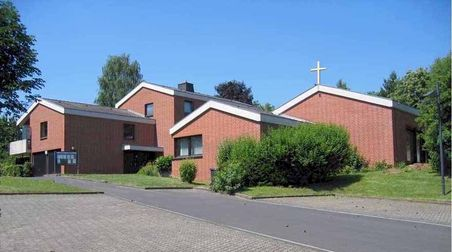
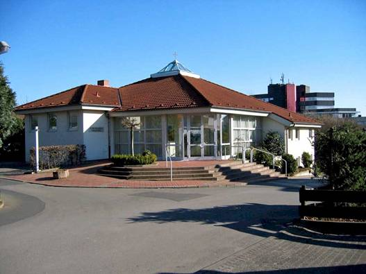

Über uns
Die Evangelische Jugend Vellmar ist die gemeinsame Jugendarbeit der fünf evangelischen Kirchengemeinden in Vellmar.
Verantwortet wird die Jugendarbeit von zwei hauptamptlichen Mitarbeiterinnen, gestaltet wird sie zusätzlich durch ehrenamtliche Mitarbeiterinnen und Mitarbeiter, und natürlich von den Jugendlichen selber.
Die Angebote der Evangelischen Jugend Vellmar finden in diesen fünf Gemeindezentren statt:
Ev. Kirchengemeinde Frommershausen

Hauptstandort. Hier befindet sich auch unser Büro.
Kirchengemeinde Frommershausen
Frommershäuser Str. 91
34246 Vellmar

Ev.Kirchengemeinde Vellmar-West
 Kirchengemeinde Vellmar-West
Lüneburger Str. 12
34246 Vellmar
Ev.Kirchengemeinde Vellmar-Mitte
 Kirchengemeinde Vellmar-Mitte
Kreuzbreite 64
34246 Vellmar
Ev.Kirchengemeinde Niedervellmar
Kirchengemeinde Niedervellmar
Kirchweg 24
34246 Vellmar
Mitarbeiter
Kerstin Weimann
Email: kerstin.weimann@evjugend-vellmar.de
Dipl. Sozialpädagogin, psychoanalytische
Kinder - und Jugendberaterin
Aufgabenbereiche:
Gruppen und Projekte
Sprechzeit
Britta Korinth
Email: britta.korinth@evjugend-vellmar.de
Dipl. Sozialpädagogin, Spiel- und Theaterpäd.
Aufgabenbereiche:
Trainee-Ausbildung (Jugendleitercard)
Theaterprojekte
TEN SING